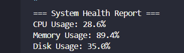

The System Health Checker is a Python script designed to quickly display key system metrics such as CPU usage, memory usage, and disk usage. This tool is useful for IT support tasks, diagnostics, and performance monitoring.

import psutil
def check_system_health():
print("=== System Health Report ===")
print(f"CPU Usage: {psutil.cpu_percent()}%")
print(f"Memory Usage: {psutil.virtual_memory().percent}%")
print(f"Disk Usage: {psutil.disk_usage('/').percent}%")
if __name__ == "__main__":
check_system_health()